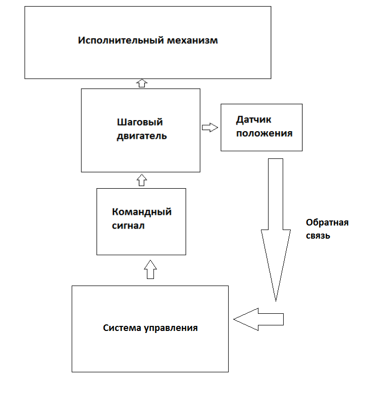
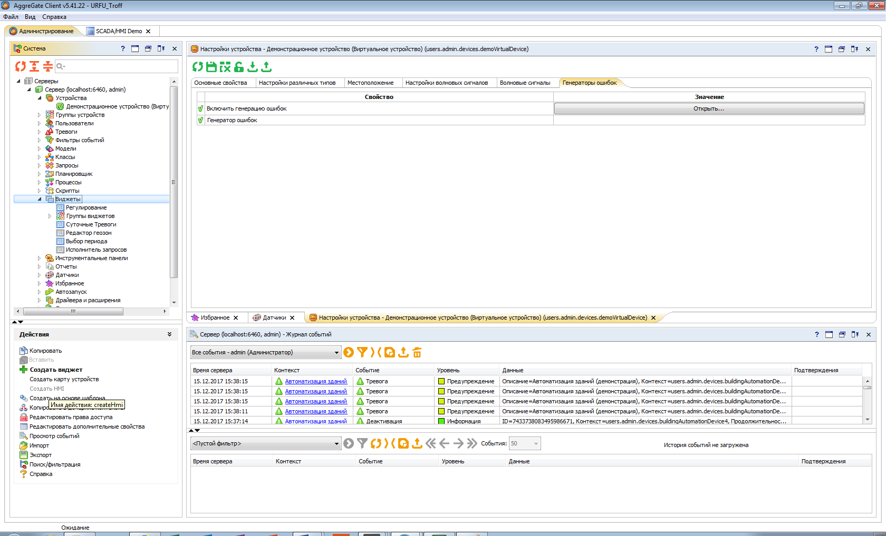
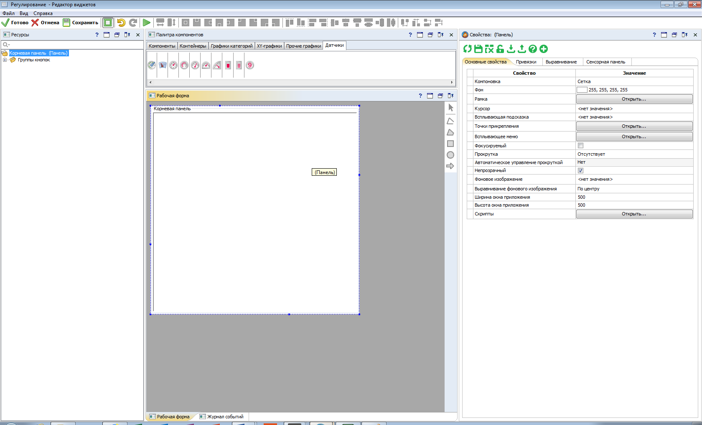
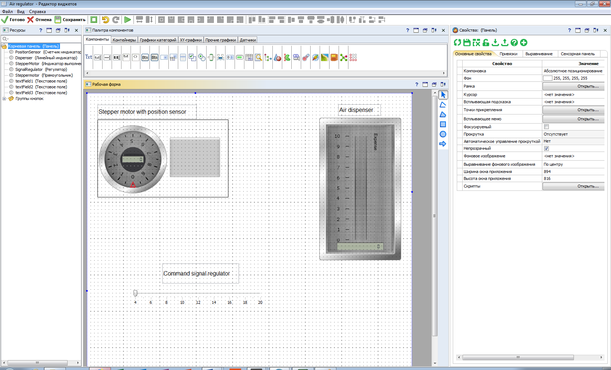
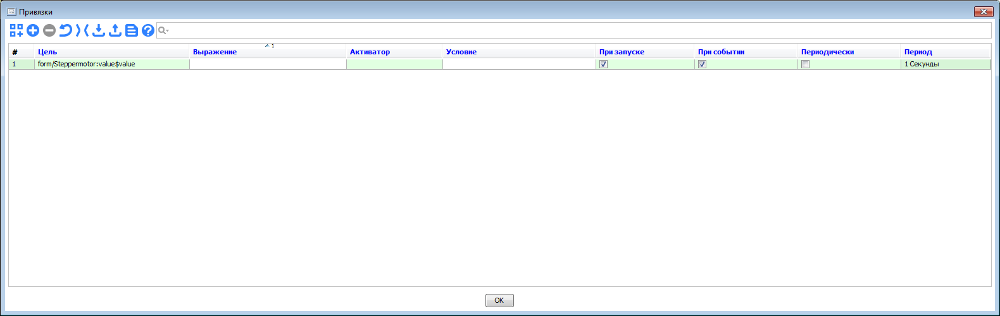
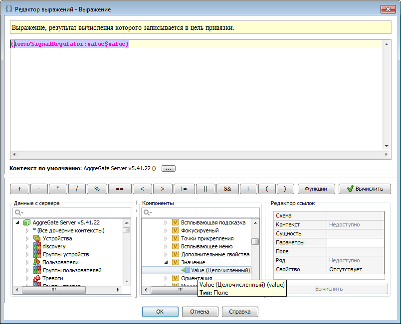
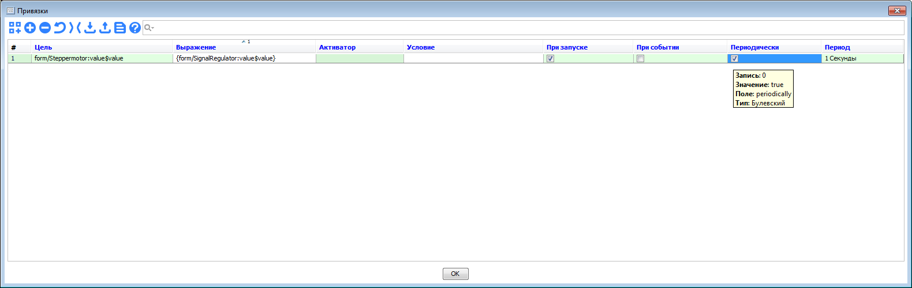
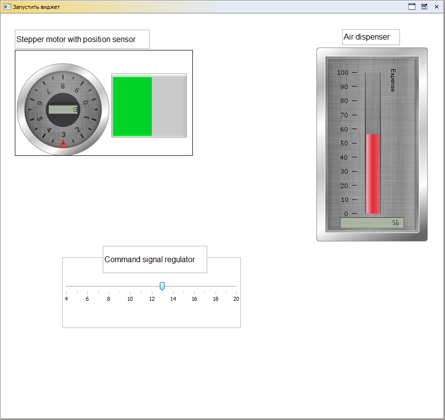

Пример задачи
Задача: Сделать систему регулирования расхода воздуха. Имеется дозатор (исполнительный механизм), двигатель (в нашем случае шаговый), датчик положения и датчик расхода. Так же имеется задающий (командный) сигнал.

Рисунок 1. Структурная схема
Создание HMI
Во вкладке “Администрирование” добавляем HMI в “Виджеты” (Рисунок 2).

Рисунок 2
Далее мы видим знакомую нам (из других SCADA) форму редактирования компонентов рабочего интерфейса (Рисунок 3).

Рисунок 3
Нам понадобятся следующие компоненты:
- 2 датчика (выбрал для них 2 счетчика – индикатора);
- Двигатель (нарисовал прямоугольник и добавил заполняющуюся шкалу для наглядности);
- Регулятор положения (командный сигнал). Использовал шкалу с регулятором;
- Дозатор (выбрал шкалу для удобства слежения за текущим расходом) ;
Добавляем все компоненты перетаскиванием. Можно еще добавить готовые изображения компонентов с каталога в папке программы AggreGate\images.

Рисунок 4
Далее привязываем компоненты между собой. Для этого есть вкладка “Привязки” на панели “Свойства” справа. В AggreGate HMI основная логическая цепь редактируется с помощью привязок.

Рисунок 5
Во вкладке “Привязки” жмем добавить привязку и видим такую картину (Риснуок 5).
Во все пункты можно зайти и прочитать комментарии разработчика для понимания как пользоваться этим инструментом.
В нашем случае понадобится выстроить связь между приборами как на рисунке 1. Так как у нас простейшая система работающая в реальном времени мне понадобилось лишь настроить периодическую запись и преобразование значений в привязках.

Рисунок 6. Редактор выраженийВ редакторе выражений добавляем значение наших компонентов, чтобы они могли динамически меняться в зависимости от времени (условие динамики задаются в окне привязок).

Рисунок 7Выставляем галочку в выборе обработчика событий “Периодически”. Можно еще настроить частоту периода. В нашем случае она равняется 1с. Аналогичным образом делаем связь между всеми элементами в соответствии рисунку 1.
В итоге у нас получилась динамическая система регулирования воздухом! (Рисунок 8)

Рисунок 8